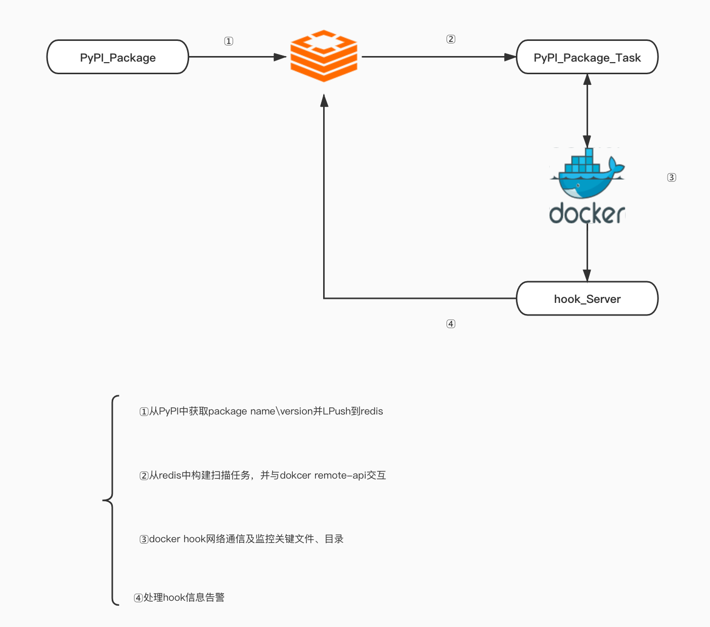

生产节点供应链安全思考
供应链代表的范围非常广，从软件包、开发tools、部署环境等都有供应链的身影，而我们经常接触到的是供应链中的生产节点(软件开发/生产阶段)，供应链安全/利用也是安全工程师非常关注的一个点，在MODEC-2020上redrain大佬分享了供应链投毒的思路，而自己之前在滴滴SDL团队内部分享过自己对供应链安全的理解，供应链在威胁/攻击链路中有着非常高的收益比(攻击范围广、方式隐蔽、危害程度大)但也同样非常考验团队的整体实力，趁着周末的时间重新整理下。
第三方软件包
各种语言都有各自软件包管理方式，也面临着不同的攻击/威胁面，以python为例子看下针对python第三方package的投毒方式
requestes
Pypi是Python的包管理工具，在平常的开发中如果缺少某些package，常见的方式都是猜测可能的package-name并pip install package做安装尝试，但是如果Pypi中package-name被投毒，那我们的安装命令便是将恶意程序下载到本地并执行。在Pypi中可以看一下requestes恶意package，包名类似于我们非常常用的requests，可以执行pip install requestes命令或者看其中的setup.py源码发现其中的猫腻。
1 | long_description = open('README.md').read() |
Pypi
Pypi在提交或者查找package时会对名字有一定的限制，已正则或是硬编码的方式，Pypi作为第三方软件包管理工具，不可能做到禁止所有的恶意package上传，而pip install package安装恶意package对本地环境危害非常大，可以简单看一下pip的流程。
- 读取本地库安装路径并通过获取的服务器地址查找对应的package
- package下载
- 解压缩并判断是否需要其他package
- 安装
恶意package最后利用的点便是安装时执行的命令，在/python3.7/site-packages/pip/_internal/utils/misc.py def call_subprocess()中，以requestes为例子最后执行为
1 | /usr/local/opt/python/bin/python3.7 -u -c "import setuptools, tokenize;__file__='/private/var/folders/5y/hxgl7qkd5fj_bsd8811nj_280000gn/T/pip-install-xkuvkzxa/requestes/setup.py';f=getattr(tokenize, 'open', open)(__file__);code=f.read().replace('\r\n', '\n');f.close();exec(compile(code, __file__, 'exec'))" bdist_wheel -d /private/var/folders/5y/hxgl7qkd5fj_bsd8811nj_280000gn/T/pip-wheel-dusencl1 --python-tag cp37 |
1 | import setuptools, tokenize;__file__='/private/var/folders/5y/hxgl7qkd5fj_bsd8811nj_280000gn/T/pip-install-xkuvkzxa/requestes/setup.py';f=getattr(tokenize, 'open', open)(__file__);code=f.read().replace('\r\n', '\n');f.close();exec(compile(code, __file__, 'exec')) |
基于Python3.8 runtime audit 做了一个简易的PyPI恶意包检测系统

不可信POC
一般出现比较重要的CVE时，github或者exploit-db等平台会出现各种POC，其中同样会存在假借POC名义在其中做攻击的恶意POC，已CVE-2020-0905为例
CVE-2020-0905
CVE-2020-0905为Microsoft Dynamics Business Central远程代码执行漏洞，国外Curtis Brazzell在github上上传了自己的恶意POC，POC执行后会模拟Windows终端假装完成漏洞利用同时会上传执行该POC的IP等信息，恶意POC中的核心内容使用十六进制和Base64做编码混淆，做到表面可信达到欺骗的效果。
1 | lhost = os.uname()[1] |
CVE-2020-1350
CVE-2020-1350 是windows DNS RCE，同样有人利用该CVE的热度做钓鱼/投毒，CVE-2020-1350
检测
通过后面的两个CVE恶意POC实践，可以看到即使是安全意识较高的安全从业人员仍然还是会中招，而对于甲方企业来说如果检出恶意package保证供应链安全应是重点思考的地方，自然是artifactory在公司内部建立可信的软件管理源是相对安全的方式，但是如果还是单纯的从第三方软件管理处做更新或下载还是存在风险。
检测的方式或者能力我还在实践中，对于业内的实践的方式不做更多的评价，我的思路类似于反入侵能力建设，沙盒方式运行怀疑的package并尽量全的获取特征点，但是同样会面临HIDS现在的困境，绕过->加规则，自己尝试实践并有更多的思考后在对该部分做补齐。